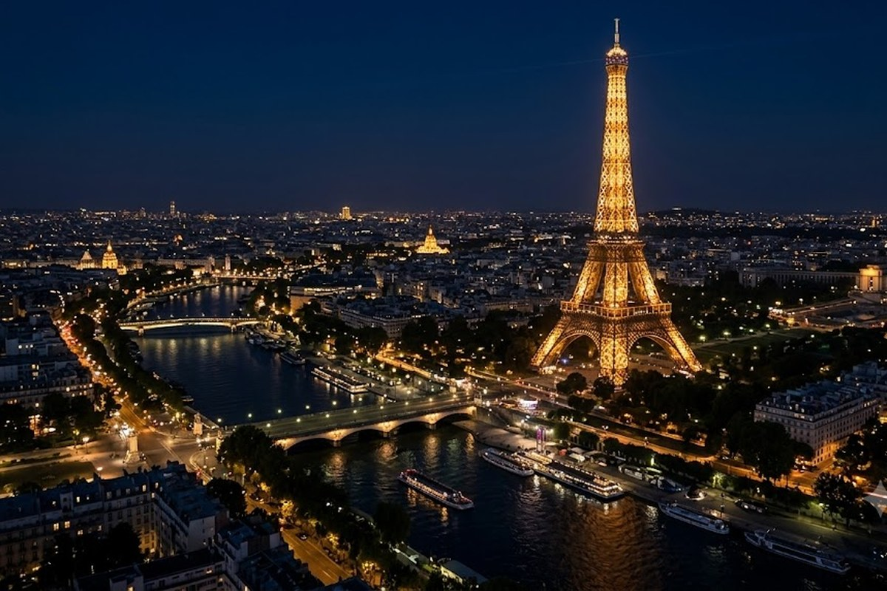
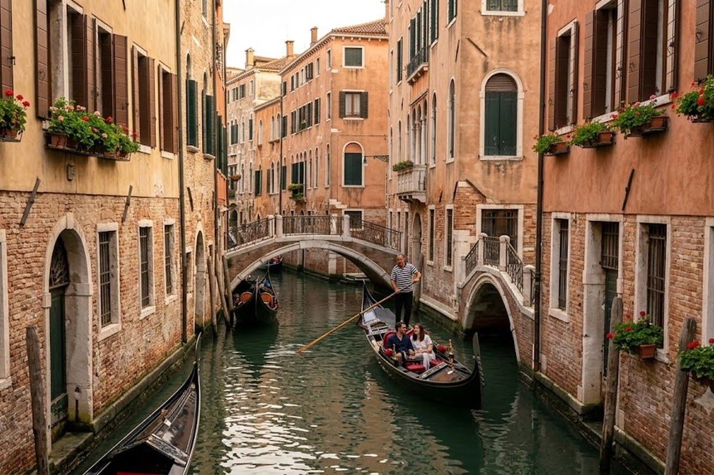
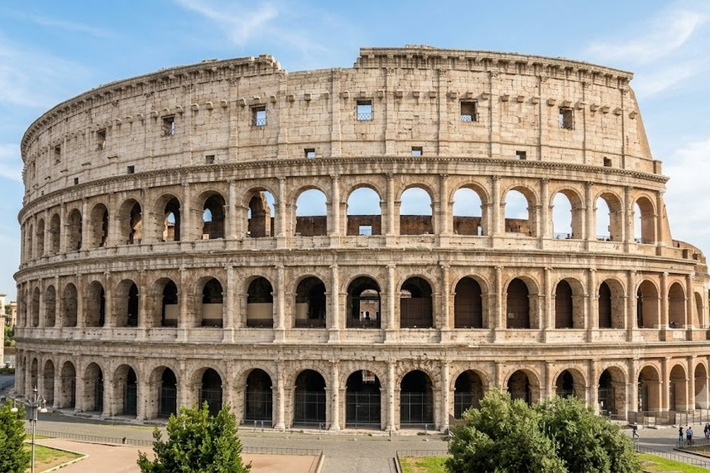
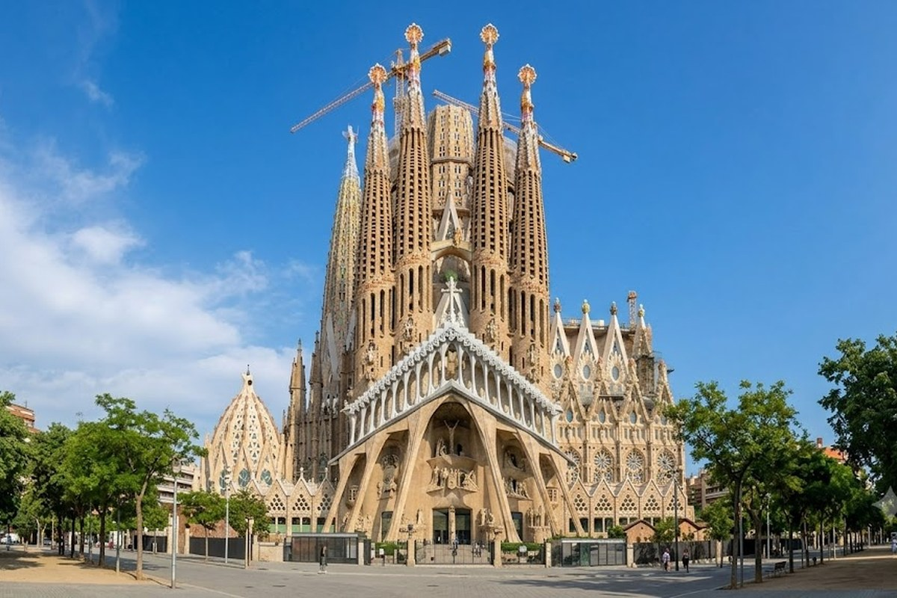

Europa · 15 días
Europa Clásica
París · Suiza · Venecia · Florencia · Roma · Barcelona · Madrid — el circuito más completo para conocer lo mejor del continente.
París · Suiza · Venecia · Florencia · Roma · Barcelona · Madrid — el circuito más completo para conocer lo mejor del continente.




Vuelo ida y vuelta
Hotel/Depto.
Traslados
Entradas (opcionales)
Asistencia al viajero
ETIAS/EES
Vuelo nocturno desde Ezeiza. Llegada a París, traslado al hotel y primer contacto con la Ciudad Luz. Noche de adaptación.
Visita guiada: Torre Eiffel, Campos Elíseos, Arco del Triunfo y Notre Dame. Tarde libre para perderse por Montmartre o las orillas del Sena.
Louvre o Museo d'Orsay (según preferencia), Versalles en el suburbio o mercados de antigüedades. Cena en bistró parisino.
Salida hacia Lucerna o Ginebra. Lago de los Cuatro Cantones, el famoso puente cubierto y el reloj de flores. Tarde libre para pasear.
Cruce de los Alpes y llegada a Venecia. Paseo en vaporetto por el Gran Canal, Plaza San Marcos y primer atardecer sobre las góndolas.
Recorrido por el Rialto, los canales secundarios y las islas de Murano (vidrio artesanal) y Burano (casas de colores).
Viaje a Florencia. Galería de los Uffizi, el Duomo, el Ponte Vecchio y las calles medievales del centro histórico. Ciudad declarada Patrimonio UNESCO.
Día libre en Florencia o excursión opcional a Siena, San Gimignano y los pueblos de la Toscana. Tarde de shopping en Via de' Tornabuoni.
Llegada a Roma. Primer recorrido por el Coliseo, los Foros Imperiales y el Arco de Tito. Cena en la Trastevere.
Visita a la Ciudad del Vaticano: Capilla Sixtina, Basílica de San Pedro y los Museos Vaticanos. Tarde: Fontana di Trevi y Plaza Navona.
Vuelo a Barcelona (o tren según circuito). Llegada y primer paseo por Las Ramblas y el barrio Gótico.
Sagrada Familia, Park Güell, Casa Batlló. Tarde en el barrio de Gràcia o en la playa de la Barceloneta.
Viaje en AVE a Madrid (2h45min). Llegada y visita al Museo del Prado o el Reina Sofía. Noche en el barrio de Malasaña.
Plaza Mayor, Palacio Real, Mercado de San Miguel y el Parque del Retiro. Tarde de tapas y vermut en La Latina.
Vuelo de regreso a Buenos Aires. Llegada y reencuentro con la familia. ¡Fin de una experiencia única!
En Europa Clásica, el secreto está en los primeros días en París: llegá con energía y hacé el Louvre el día 3, no el 2. El jet lag es real y el Louvre merece foco total. Para Venecia, reservá la góndola al atardecer (no al mediodía) — el precio es el mismo y la foto es diez veces mejor.
¿Cuándo es la mejor época para hacer este circuito?
Primavera (abril-junio) y otoño (septiembre-octubre) son ideales: clima agradable, sin el calor del verano europeo y menos saturación turística. Julio-agosto también se puede pero con más gente y precios más altos.
¿Necesito visa para entrar a Europa?
No, los argentinos no necesitan visa Schengen. Solo pasaporte vigente con al menos 6 meses de validez después del regreso. Eso sí, en 2026 entró en vigencia el sistema EES (registro de huellas en frontera) y se espera el ETIAS para fin de año.
¿Cuánto dinero extra llevo para gastos personales?
Recomendamos entre EUR 50 y EUR 100 por día por persona para comidas no incluidas, compras, transportes opcionales y propinas. Europa no es barata, pero tampoco hay que exagerar.
¿El circuito es en grupo o privado?
Ofrecemos ambas modalidades. El circuito grupal tiene salidas con fechas fijas y precio más accesible. El privado es armado 100% a medida para tu grupo, sin compartir con desconocidos.
¿Qué pasa si me enfermo o hay un imprevisto?
Todos nuestros paquetes incluyen asistencia al viajero con cobertura médica en Europa. Además, Gonza o Cris están disponibles durante todo el viaje para cualquier urgencia.
Contanos tus fechas y cuántos viajan — te armamos la cotización en menos de 24 horas.
💬 Quiero cotizar este circuito